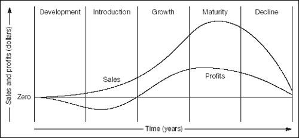
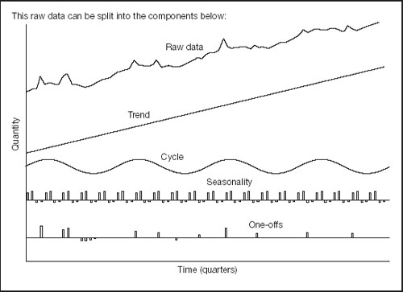
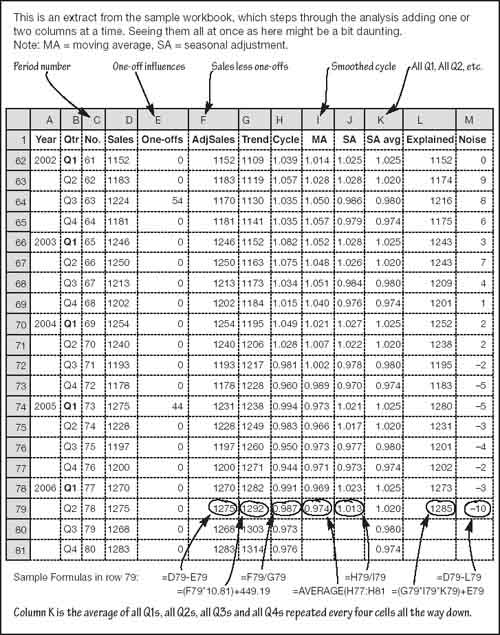
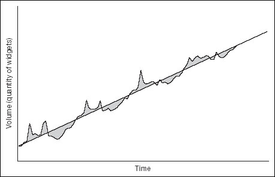
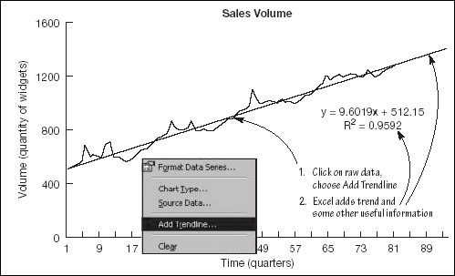
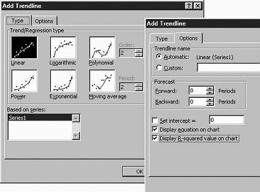

Pursuing patterns
Collecting the data
The starting point for analysing your sales record, or any time series, is to collect historical figures for, say, each month or quarter, turn them into a chart, and look for patterns.
It is better to work with volumes (the quantity of widgets) rather than values (sales revenue) because volumes are not distorted so much by inflation, exchange rate movements, price changes and other monetary hiccups. Of course, money does affect volumes (e.g. a short-term price-cutting promotion generally boosts sales volumes). We will come to this later.
Values and volumes
Try to work with volumes (quantities) rather than values (costs or prices), to minimize the influence of monetary factors such as inflation and currency fluctuations.
Clearly, the longer the run of historical data you can examine, the better the feel you will get for the numbers. A long run of numbers also assists when estimating the average effects of special promotions and seasonal influences.
In addition, a long run of figures helps you see where you are in the product life cycle. All products tend to go through the five stages shown in Fig. 9.1: development, introduction, growth, maturity and decline. Generally, the objective is to maximize the growth stage and minimize the other phases, but this is a topic for another book. In the context of analysing and forecasting, if you know where you are in the life cycle, you will understand what has been happening, and what is most likely to happen. For example, there must be a very good reason to project a sudden increase in sales when a product is in decline, unless, perhaps, you have just introduced a product enhancement or cut prices.
Fig 9.1. The product life cycle

|
Four patterns
Once you have collected and charted your data, there are three or four patterns you should expect to see (see Fig. 9.2). These are:
an underlying trend;
sometimes a cycle;
usually a seasonal pattern;
frequently, a series of special or one-off influences resulting from events such as price cutting promotions; and
residual noise that cannot be explained easily.
Fig 9.2. Four patterns revealed
What to look for in your sales history
One-off influences
The underlying trend
Any cyclical factors
Seasonality
Residual noise.
If you collected enough figures, the trend would be the product life cycle (trends do not have to be straight lines). However, it is very rare to have enough figures to see anything like the whole life of a product. More often, the trend is just a part of the overall life cycle.
Sometimes you can discern all the patterns in the raw data – although not with any precision. So, you need to carve up the data to find them.
Wielding the knife
How do you carve up your raw data to reveal the underlying patterns? Ideally you first estimate special influences such as the effects of price cuts and new product launches and then adjust the raw data to remove these effects. Then you could use a ruler to identify the trend, although we will look at some neat ways of using a spreadsheet to do this. Next, you can measure the difference between the raw data and the trend to get an indication of the cycle. You can use a smoothed cycle or moving average to estimate seasonality.
All this might sound a bit daunting, but spreadsheets provide some clever methods which make it easy. The sample workbook from this book’s website and the following paragraphs walk step-by-step through the process. Figures 9.2 and 9.3 are extracts from the workbook. I recommend using the workbook because the figures are presented in easy steps rather than in one big scary heap. As always, when taken in small bites the analysis becomes very simple.
Fig 9.3. Data dismembered
|
| Step 1: The raw data |
Figure 9.3 shows several columns of data. For time series analysis, it is easiest to work with columns rather than rows. In the example, dates are in columns A to C and the raw sales figures are in column D. Normally you can put the dates in just one column, but for the explanatory purposes of this book it was convenient to show the dates in three columns. Figure 9.2 and Chart 1 in the workbook show these sales figures visually. Recall that Chapter 5 explained how to produce charts using a computer.
Accounting for special one-off influences
Special one-off influences are distortions that you know about. They include the effects of price cutting promotions and experimental price hikes, the introduction of new lines and new models, sales at special events, and – of course – the effect on your sales of similar tricks by your competitors. In the example, one-offs include a price cutting promotion which boosted sales by 44 units in the first quarter of 2005, and catching up with a competitor’s product modification which caused losses of 100 sales spread over the whole of 1990.
If you go back through your files, you may find that much of this is documented. If you ran a special sales promotion a couple of years ago, you probably identified exactly what it did for your sales (yes?). For example, if you expected sales in a previous August to be 550 units, but they were actually 660, you might have concluded that the promotion added 20% to sales. It is easiest to do this estimation at the time, while you are most aware of other influences. Later, you might forget that unusually sunny weather contributed to higher sales, while the promotion itself was not as effective as you told the boss.
Step 2: Adjusting for one-offs |
It is easy to adjust raw sales data for one-off influences. Simply key in your estimates of the effect of one-offs (into column E in the example). In the next column to the right, subtract one-offs from the sales data (e.g. in cell F2 key = D2-E2 then grab the fill handle and copy the formula down the column). The new column of adjusted sales volumes will be smoother than the original – compare Charts 1 and 2 in the sample workbook.
Trends
About trends
The next step is to identify a trend. Sometimes this is easy. You could more or less lay a ruler on the raw data in the examples here and draw in a trend line by eye. If you shade in the areas between the actual sales and the trend, it immediately becomes obvious that when positioning the ruler you are trying to balance sales above and below the trend line (Fig. 9.4) – that is, you are trying to find the line of best fit. You can probably guess that there is a way to do this arithmetically. Before we try it, consider a small problem.
Fig 9.4. Adding a trend to a chart

What if the trend is not linear? Recall that sales growing at, say, 10% a year trace an upwardly curved path (Chapter 6, p. 80). No problem. Growth trends can also be fitted using a computer. In fact, all manner of odd-shaped trends can be calculated – but this is rarely necessary. So long as you understand which part of the overall trend you are dealing with, you can generally fit a straight or growth trend to part of the time series. This allows you to get at the other patterns, but take great care if you extrapolate such short-term trends.
|
| Step 3: Fitting a trend to a chart |
At one time, fitting a trend demanded nightmare calculations. These days you do not even need to know the maths. You can simply plug the numbers into a spreadsheet, click a button, and view the results. Try the following, it will amaze you.
1. | In the sample workbook, view Chart 2. |
2. | Right-click on the wiggly sales line on the chart and a pop-up menu will appear. |
3. | From this pop-up menu, select Add Trendline and a dialog box will appear. |
4. | Click OK. |
The dialog box will close and the chart will miraculously contain a trend line, as in Fig. 9.5.
Fig 9.5. Fitting a trend to a chart

Trendline options
You probably noticed that the Add Trendline dialog box has some intriguing options (see Fig. 9.6). You can select these options before you draw a trend line. Or afterwards you can right-click exactly on the trend, select Format Trendline and reselect from these options. They are discussed next.
Fig 9.6. MS Excel’s Add Trendline dialog

Type. You can click on a little sketch to indicate the type of trend that you are looking for. You will find that for most business analysis you tend to work with linear and logarithmic trends and moving averages. More on this as we go along.
Options. The Options tab includes some very tempting stuff, as follows:
Trendline name allows you to label the trend. OK, not an exciting start I grant you.
Forecast is self-explanatory. It really does do what it says, but resist the temptation to throw down this book, click the option, and start writing up your sales forecast. There is more to come.
Intercept can be ignored. The intercept is the sales volume on day zero – logically you would expect this to be nil, but it is unlikely to be so because of the way that the sales periods are numbered and various other gremlins. Leave this option unchecked and let the spreadsheet create a workable trend.
Display equation on chart is self-explanatory in intent and important for analysis.
Display R-squared value on chart is also very important.
Both these Display options are discussed in more detail below. For your own analysis, you will normally want to have these two options switched on. If you are presenting the figures to others, you may want to omit them.
Estimating sales
The Add Trendline option that allows you to Display equation on chart (Fig. 9.6) does just what it says; it reveals the equation of the estimated trend line. It is important to know this. It allows you to calculate the value of the trend on any date. In other words, you could – but you won’t yet – use it to put a number on sales for next year. The equation that the spreadsheet generates in the example here is (don’t shudder):
y = 10.81x + 449.19
The computer is not bright enough to know that we are working with dates and sales values, so it replaces them with the shorthand notations x and y respectively. The equation says simply that if you multiply any date (x) by 10.81 and then add 449.19 you will find the trend of sales volume (y) on that date.
How do you multiply a date such as January? You cannot. But you can replace the dates with any sequence of numbers that is convenient. In the example, the dates are replaced with numbers 1 to 80, where 1 is the three-month period January–March 1983, 2 is April–June 1983, and so on through to 80 which represents October–December 2002.
In other words, for period 10, April–June 1985, the trend value for sales is 10.81 times 10 plus 449, or 557 widgets. For period 85, the first quarter of 2004, the trend predicts (and I use that word loosely) that sales will be 10.81 times 85 plus 449, or 1368 widgets.
There is a trend line, but is there a trend?
Suppose you flicked a wet paintbrush on a chart and produced an evenly splattered pattern of dots. If you then chose Add Trendline, your spreadsheet would obligingly draw in a line for you. However, it would not be very meaningful. Clearly, you need some measure of how well a trend line fits the data. This is exactly what the Display R-squared value option does.
R-squared (R2) tells you how much you can trust the fitted line. It is a proportion. Multiply it by 100 to convert it to a more-understandable percentage. The r2 in these examples (see Fig. 9.5) is 0.9792, or 97.92%. This is a good result which indicates that you can be about 98% confident that the trend line is a good fit. Generally, you can live with a value in the nineties. Anything less than about 90% calls the value of the trend line into doubt. Always examine r-squared when you fit a trend. By the way, statisticians call this the coefficient of determination; or r2 with a lowercase r (but no one told Microsoft).
|
| Step 4: Adding a trend to your data |
Drawing a trend on a chart is visually informative, but it does not give you any numbers to work with. The easiest way to get at them is to enter the equation (see Figs 9.5 and 9.6) in the spreadsheet. In the example, you would key =(C2*10.81)+449.19 into cell G2 and then copy it down the column – and there is the trend line in numbers.
|
About the business cycle
The ideas of a trend, seasonality and special influences should be self-explanatory. The cycle is a persistent but less well-known external economic phenomenon.
Economies do not progress smoothly. They tend to follow a rhythmic path (depression, recession, recovery, boom), known as the economic, business or trade cycle. This typically repeats every five years or so, but the timing and magnitude always vary. Think of it this way. When the economy is booming, firms will take on new employees and produce more. The employees spend their salaries and wages, creating more demand. Eventually bottlenecks and supply constraints such as labour shortages set in, limiting output. New investment will not be profitable or feasible. Economic growth (i.e. GDP or GNP) will peak. With less demand for investment goods, construction firms, machine tool producers and other capital goods manufacturers will cut back their labour forces. As a result, total consumer demand will fall and eventually recession will set in. And so on.
The cycle is perhaps more pronounced in the more-mature economies of the West, because less developed countries usually have much larger pools of unused resources on which to draw. However, no matter what your politicians may tell you, no government has succeeded in abolishing the business cycle. The truth of the matter is that their well-meaning tinkering usually contributes to it.
Seeing cycles
If you can take a long enough run of data and isolate all other factors, you will almost certainly see a cycle in your sales figures. Ideally you want at least 10 years of monthly or quarterly data in order to find a couple of complete cycles. The problem is that you rarely have sales figures covering enough time periods to reach any viable conclusion. More often than not, you have to review the cycle at the national economic level, and make a sensible judgement about how this affects you.
Leading indicators
Look for published leading indicators which try to predict turning points in the economy as much as 18 months in advance. Sounds useful? One caveat, interpret them with care because they are often revised as new information comes to hand.
A good newspaper will keep you informed (what better than the Financial Times?). If you want to go back to source, cyclical indicators are published by national governments, the OECD, and employers’ organizations such as the Confederation of British Industry (CBI) or the German IFO labour institute.
|
| Step 5: Isolating a cycle |
When you search for a cycle in your sales figures, do so by removing the trend from the raw data and then smoothing the result. In the example, divide the adjusted sales figures by the trend (e.g. into cell H2 key =F2/G2 and copy this down the column). The values might look a bit odd. They are proportions. A number such as 1.051 indicates that the adjusted sales are 5.1% above the trend, while 0.98 indicates 2% below the trend. If you were to view this new column as a chart (chart 4 in the sample workbook) you would see the cycle, even though it’s a bit lumpy. What you want to do now is smooth off the lumps and bumps with a moving average: in cell I4, key =AVERAGE(H2:H5) and copy this down to cell I79.
Moving averages
|
| A moving average is just like any other average, but one applied to a time series. For example, a three-month moving average for February would be the figures for January, February and March added together and then divided by three. The moving average for March would be February to April’s figures averaged, and so on. There is one important point to note about moving averages. Always use an odd number of periods and centre the average against the source data. This is why the first formula in the example went into cell I4, not I2. |
This example uses an arbitrary five-period moving average. Really, using a multiple of four quarters would make better sense (each quarter would be included the same number of times) but an even number of periods cannot be centred. Also, the result is not ultra-smooth. But we can live with this – it works well enough to get useful results. (See Fig. 9.2 or Chart 4 in the workbook.)
|
Using the cycle
There are three things to know about the business cycle. First, understand where you are in the cycle. You may not want to forecast continuing rapid growth in sales if the economy is starting to plunge into recession.
Second, determine the extent to which demand for your products and services is cyclical. You know the sort of thing: when times are tough businesses cut back on advertising expenditure and consumers spend less on luxury goods, but demand for staple foodstuffs will remain steady or may even rise as it displaces more costly gourmet trifles. How cyclical is the demand for your goods and services? Isolate the cycle as described below to find out.
Third, discern the extent to which you are in step with the cycle. For example, housing starts, companies’ financial surpluses and share prices tend to peak up to 16 months ahead of the overall cycle. Consumer credit, car sales and manufacturing orders reach their zenith about six months ahead. Retail sales lead by about three months. On the other hand, job vacancies and average earnings tend to lag the cycle by three or four months. Interestingly, investment, order backlogs and inventories peak about a year after the overall cycle. Note that this is investment in the economic sense – spending money on factories, machinery and other assets with a life of more than a year. We discuss this in Chapter 11. Buying stocks and shares, which you and I often refer to as investment, is called saving by economists. Back to the point – draw your cycle on the same chart as the national business cycle and compare the timing of the two. This book’s website has links to useful sources of economic data.
|
| The foregoing highlights the value of trying to discern cyclical patterns in your investment spending, order books and inventories. For example, if you find that you have tended to build unnecessary inventory in the months after a peak in economic activity, you can watch for the turn and reduce production sooner than usual. It is a tough call, and you will be actively contributing to the cycle, but you might find that you can manage your business more effectively when you track the cycle. |
Seeing seasonality
Seasonal factors affect a perhaps surprising range of goods and services. Obvious examples are sales of summer and winter clothing and sports goods, supplies to factories which shut for an annual holiday, travel bookings and greetings cards for annual festivals. You probably have a good feeling for the seasonality of your business already. Numerically, it is quite easy to estimate.
Step 6: Calculating seasonality |
Possibly you have guessed that the lumps in the unsmoothed cycle are indicative of the seasonal pattern. To identify the seasonal factors, simply divide the unsmoothed by the smoothed cycle (e.g. in cell J4, key =H4/I4 and copy down). As with the cyclical indicator, the numbers are proportions.
For forecasting, you will find it useful to know the average seasonal adjustment factor for each month or quarter for the past few years. For January’s seasonal adjustment factor, find the average of the January figures; for February’s, take the average of the February figures and so on. This is simple arithmetic. The obvious, if tedious, way of doing it is to key in a formula such as this one which goes in cell K2: =AVERAGE(J6,J10,J14,J18,J22,J26,J30,J34,J38,J42,J46,J50,J54,J58,J62,J66,J70,J74,J78). You need to do this only for the first four quarters. By cell K6, you can use =K2, which you can just copy down the column. Inspect the sample worksheet to see this in action.
Quick and dirty seasonality
Assume for the moment that you had no special promotions or other one-off influences last year. You can calculate the seasonal pattern for your monthly sales figures totals as follows.
Find the average monthly sales for the year (i.e. total annual sales divided by 12).
Now calculate each month’s actual sales as a percentage of the average.
This is all. The percentages imply the seasonal pattern. For example, suppose February’s sales were 10% below average and August’s were 10% above average. If you are forecasting this year’s sales at 500 widgets a month on average, you would expect to sell 450 in February and 550 in August. Sorry if we getting ahead of ourselves. We will come on to forecasting in a moment.
By the way, you can usually improve on this quick approach by using a linear trend or a moving average for each month in place of the simple average. Moreover, do remember that seasonal factors for just one year may not be typical of the underlying seasonality.
Timing of seasonal influences
There is a small problem with seasonality, which relates to the way that data is collected and compartmentalized. The influences on seasonality, including the weather and religious festivals, do not fall conveniently into step with the quirks in our calendars. Easter, the Chinese New Year and Muslim Eid are on different dates each year when marked in a Gregorian (Western) diary. February has an extra day every four years on the same calendar.
The bottom line is that you have to exercise a good dose of management judgement when calculating seasonality – as you do with all analysis. Do not accept the numbers that come straight off the spreadsheet. Question them and if necessary adjust them subjectively.
Pulling it all together again
|
| Step 7: Putting Humpty back together |
The final step in analysing the patterns is to glue them back together and see if you end up with the raw data you started with. To do this, multiply together the trend, smoothed cycle and average seasonal adjustment factors, and add in special one-offs – in the example, in cell L4 key =(G4*I4*K4)+E4 and copy it down the column. If you estimate one-offs as proportionate influences on sales, which you might do particularly for forecast periods, you would multiply everything (eg, =G4*I4*K4*E4). The resultant figures in column L should be very similar to the originals in column D – but see Noise, below.
Noise
Note that when you reassemble your patterns, they will not recreate perfectly the original series. You will be left with some random values – noise – which cannot be readily explained (column M in the example, which is column D less column L). Time series analysis is not a perfect science. The best you can do is try to minimize the noise. It can alert you to one-offs and other factors which you have not identified fully, sometimes leading you to work through the numbers a second time and improve the analysis. (Chart 6 in the workbook compares the original and the rebuilt series and shows that our analysis is fairly accurate.)
Coffee time
We ran through the analysis looking at both the methods and the rationale for each pattern-hunting expedition. Now that you have dismembered and rebuilt the time series, it is a good time to sit back and look at what you have learned. Examine each pattern in turn, asking yourself what caused it and what it tells you. By now, you probably have a strong desire to project these patterns forward and produce a forecast. There is one more idea to review in this chapter and then, I promise, we will get down to forecasting.